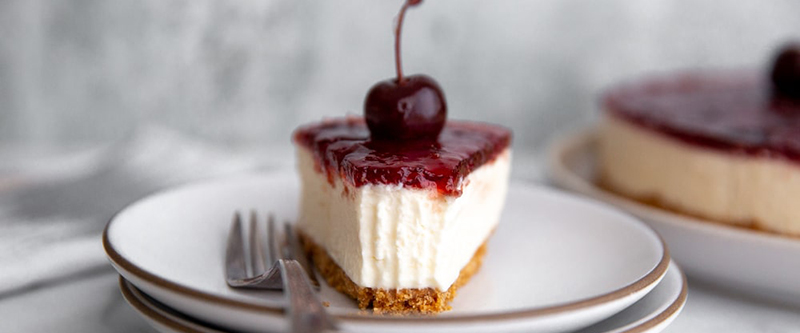

приготовление:
-
Дать всем ингредиентам из холодильника полежать при комнатной температуре не менее 2 часов. Данное кол-во ингридиентов рассчитано на форму диаметром 24 см.
-
Измельчить 200 гр. простого сухого печенья в мелкую крошку, добавить 120 гр. мягкого сливочного масла, 70 гр. сахара и щепотку соли, всё хорошо перемешать в однородную массу, выложить в смазанную сливочным маслом форму для выпекания, утрамбовать стаканом, формируя корж-основу без бортов. Обмотать форму 2-3 слоями фольги (это необходимо сделать, чтобы при выпекании вдальнейшем на водяной бане вода не попала во внутрь) и поставить заготовку на 15 минут в холодильник. Разогреть духовку до 180 градусов. Затем выпекать корж 15 минут до золотисто-коричневого цвета. Готовый корж оставить остывать на 30 минут.
-
1 кг. сыра Филадельфия (отлично подойдет Творожный сыр «Hochland Professional» Cremette) выложить в большую ёмкость, добавить ванильной эссенции и взбить на малых оборотах 2-3 минуты. Туда же отправляем 170 гр. сметаны (жирность не менее 25%), по 1 ввести 3 яйца, продолжая взбивать на малых оборотах. Отдельно соединить сухие ингредиенты: 55 гр. муки, 300 гр. сахара. Частями ввести сухую смесь в сырную (миксер должен работать только на малых оборотах). В результате получится воздушная однородная сырная масса. Вылить сырную массу на слегка остывший корж, поставьте форму с чизкейком на противень, и налить в противень 1-2 литра кипятка так, чтобы вода покрывала треть формы. Выпекать чизкейк 45 минут при 180, потом 30 минут при 160, затем выключить духовку, приоткрыть дверцу и дать постоять 1 час, после еще час при комнатной температуре. В конце чизкейк поставить в холодильник на 6-8 часов.
-
Если есть желание подать с фруктовым слоем, то понадобится 500 гр. любого фруктового или ягодного пюре (отлично получается с замороженным манговым пюре) и 10 гр. листового желатина (2 листа). Нужно желатин положить в холодную воду с несколькими кусочками льда. В это время поставить фрукты на огонь, добавить 100 мл. воды, попробовать на сладость (если хочется сделать более сладким — положить по вкусу сахар, но в манго я не добавляла) и, помешивая, разогреть примерно до 80 градусов. Отжать рукой желатин от излишков воды и ввести во фруктовую смесь, хорошенько размешать, вылить на чизкейк, дать сначала остыть при комнотной температуре, а потом поставить в холодильник застывать окончательно.
-
Перед подачей дать постоять 15-20 минут при комнотной температуре. Можно подавать с фруктами и украшать по желанию.